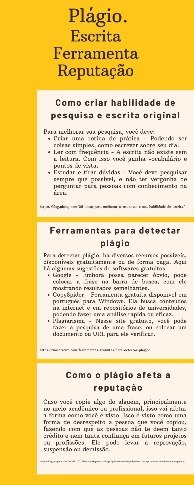
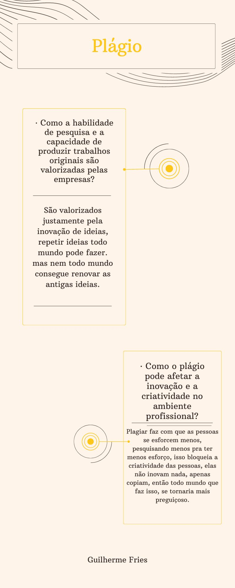
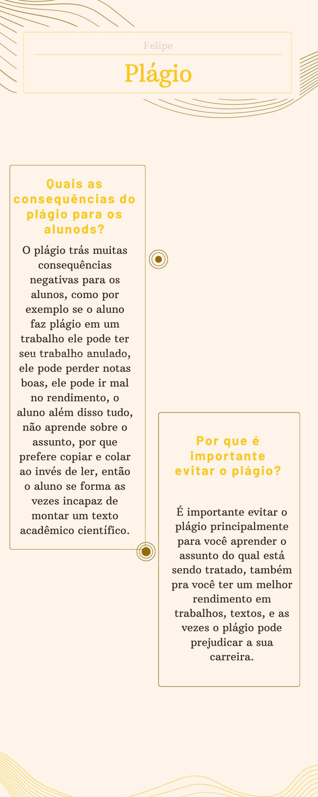
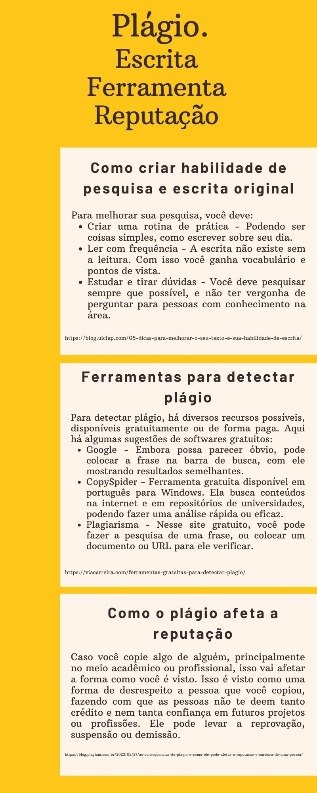
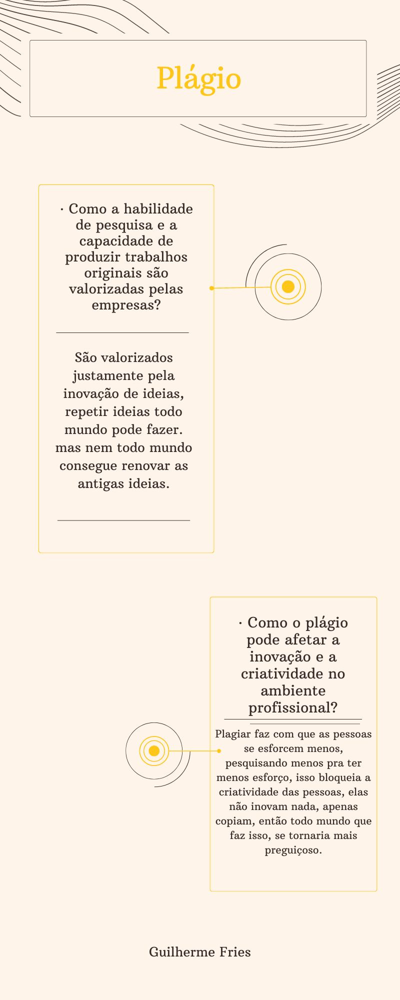
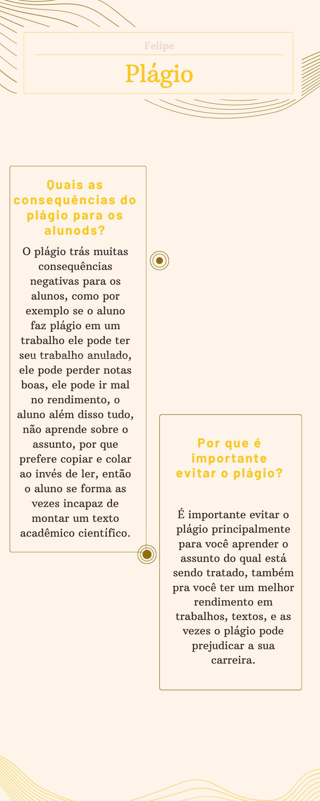

{{noticia.titulo}}
{{noticia.conteudo}}
{{noticia.titulo}}
{{noticia.conteudo}}
Nenhuma notícia cadastrada.
{% endif %} 





Neste texto, temos a intenção de abordar as profissões no mundo do trabalho no decorrer do tempo. Profissões passadas, que hoje podem, ou não, existir. Profissões contemporâneas que se destacam no mercado nos dias atuais. E também, possíveis profissões que serão criadas futuramente.
Falando um pouco sobre as profissões do passado, elas são aquelas que, por mais que fossem muito comuns antigamente, deixaram de existir nos dias de hoje, seja por uma máquina substituir sua função, seja porque não passamos mais por esses problemas.Alguns exemplos de profissões do passado são: Datilógrafo, pessoa responsável por escrever textos, cartas e documentos, até o surgimento e popularização dos computadores. Foi a profissão que abriu a porta para as mulheres no mercado de trabalho; Leiteiro, que foi uma profissão que entregava leite nas casas das pessoas, mas que por conta da presença de refrigeradores, a profissão acabou ficando menos popular; Vendedores de locadoras foi uma profissão que vendia e alugava fitas e CD's de filmes, que acabou desaparecendo por conta dos serviços de streaming.
As profissões do presentes são aquelas que existem e estão em alta nos dias atuais e que provavelmente existirão por um bom tempo. Elas passaram por diversas alterações, principalmente agora com o uso da tecnologia. Alguns exemplos de profissões são: Psicólogo, profissão muito respeitada nos dias de hoje, principalmente com a saúde mental se tornando um tópico tão importante quanto deveria ser a um bom tempo; Gestor de mídias sociais, que é uma das profissões mais recentes no campo da comunicação. A formação deste profissional está ligada aos cursos de Marketing, Jornalismo, Publicidade e Relações Públicas. O profissional que deseja seguir a carreira de Gestor de Mídias Sociais precisa ter boa comunicação, conhecer o comportamento dos consumidores nas redes sociais, ter criatividade, possuir domínio da cultura digital e saber lidar com crises. Técnico em Telemedicina que é uma área que faz o uso de modernas tecnologias de telecomunicações e da informação com o intuito de fornecer atenção médica e informação a pacientes localizados em locais distantes.
As profissões do futuro serão aquelas que lidarão com os problemas que ainda não temos, na maioria das vezes, envolvendo computadores e tecnologia. Todo o mercado envolvendo programação se tornará um tópico muito importante. Exemplos de profissões do futuro são: Desenvolvedor de realidade virtual, que desenvolve e programa aplicações VR, dando-os novas funcionalidades. Essa profissão requer conhecimento de modelagem 3D e experiência com softwares de desenvolvimento. Essa profissão lidará com a realidade virtual, que pode ser usada tanto para lazer, quanto para trabalhar; Desenvolvedores de software, que são considerados profissões do futuro devido ao avanço tecnológico, mudanças econômicas globais e crescente dependência da sociedade em tecnologia.
Nós concluímos que essas profissões em que citamos refletem as tendências antigas, atuais e futuras do mercado de trabalho, mas é importante ressaltar que o mundo profissional está sempre evoluindo, e novas oportunidades vêm surgindo ao longo do tempo e é fundamental acompanhar as mudanças tecnológicas e as demandas do mercado para se manter atualizado e talvez se destacar nessas áreas.